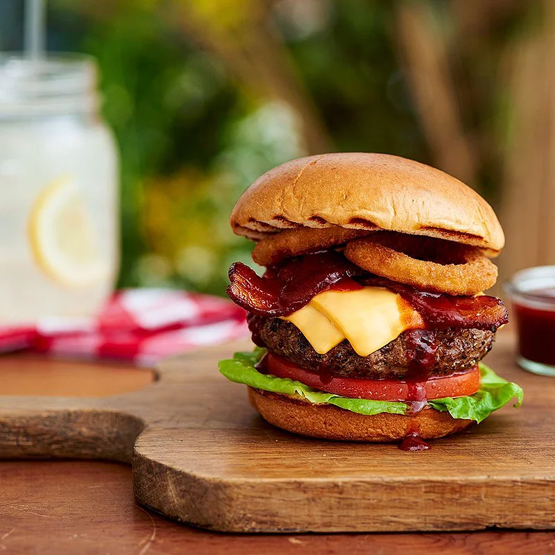

Bold Honey-Barbecue Burger

Description
Grilled beef burgers are topped with honey-barbecue sauce, crisp bacon, onion rings, cheese slices, and tomatoes.
Ingridients
- 1 pound ground beef
- ½ cup chopped green onions
- ½ teaspoon garlic powder
- ½ teaspoon cayenne pepper
- 2 tablespoons melted butter
- ¾ cup barbecue sauce
- 1 tablespoon honey
- 8 frozen onion rings
- 4 slices Borden® American Cheese Singles
- 4 slices tomato
- Fresh lettuce
Steps
- Stir 1 bottle barbeque sauce and dry onion soup mix together in the bottom of a large slow cooker crock. Place pork loin and ribs into the slow cooker.
- Cook on High until the meat begins to fall apart, 6 to 8 hours. Remove meat and set aside. Allow crock to cool enough to handle; pour liquid into a bowl. Clean the crock and return it to the slow cooker.
- Debone ribs; discard bones and any fat. Shred meat from the ribs. Shred pork loin meat using two forks pulling them in opposite directions. Return all the shredded meat to the slow cooker. Pour 1 bottle barbeque sauce over the pork. Add a small amount of water to the sauce bottle, shake vigorously to get as much sauce from the bottle as possible, and pour into the slow cooker.
- Cook on Low for 1 hour